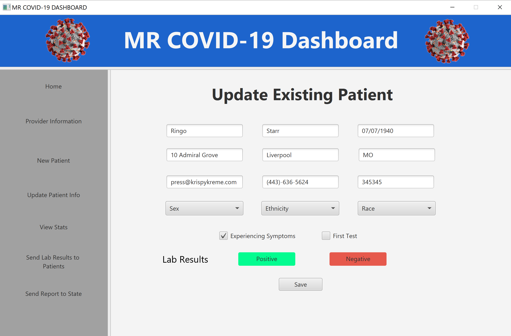
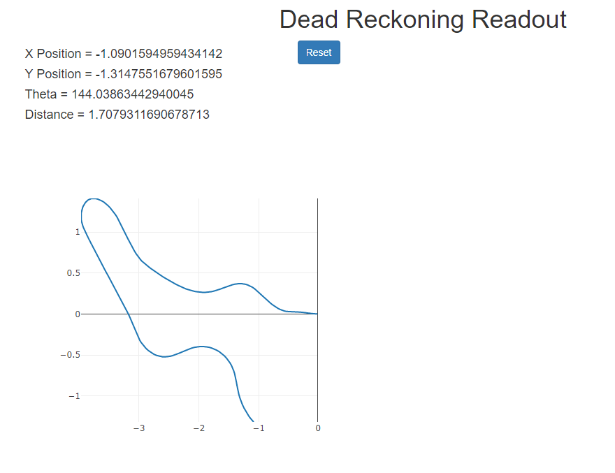

Developed over 30 hours for Hack for Good's HackDuke 2020 event - a JavaFX interface for logging COVID-19 patient data, test results, statistics, hospital records, etc.
GitHub »

Tracks ROV position over time via two encoders & differential drive equations.
GitHub » YouTube »